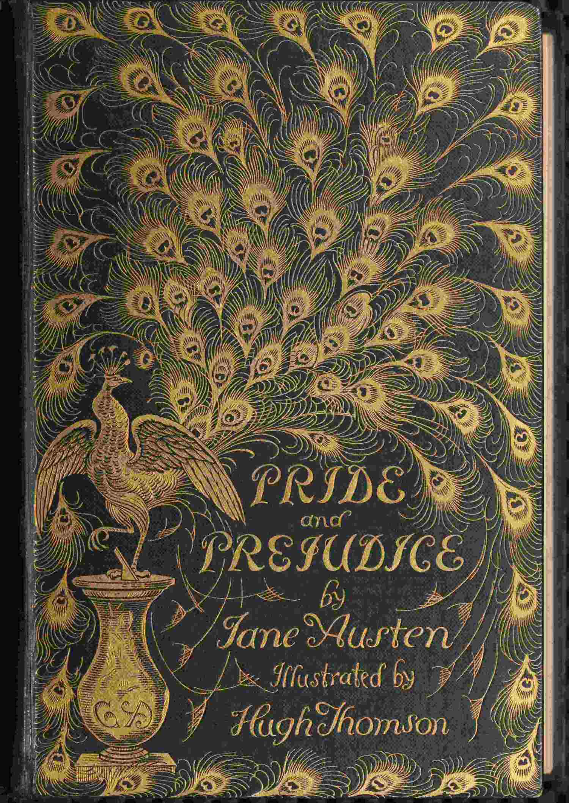

Orgullo y prejucio

Orgullo y prejuicio (en inglés, Pride and Prejudice), publicada por primera vez el 28 de enero de 1813 como una obra anónima,
es la más famosa de las novelas de Jane Austen y una de las primeras comedias románticas en la historia de la novela.
Su primera frase es, además, una de las más famosas en la literatura inglesa:
«Es una verdad mundialmente reconocida que un hombre soltero, poseedor de una gran fortuna, necesita una esposa».
Es una novela de desarrollo personal, en la que las dos figuras principales, Elizabeth Bennet y Fitzwilliam Darcy,
cada uno a su manera y, no obstante, de forma muy parecida, deben madurar para superar algunas crisis y
aprender de sus errores para poder encarar el futuro en común, superando el orgullo de clase de Darcy y los prejuicios de Elizabeth hacia él.
Es una de las obras más conocidas de la literatura inglesa, gracias a innumerables ediciones y,
recientemente, a películas (como Orgullo y prejuicio, 2005), reescrita incluso en forma de un musical de Broadway
Leer ahora
Mujercitas
 Mujercitas (en inglés, Little Women o Little Women or Meg, Jo, Beth and Amy) es una novela de la escritora estadounidense Louisa May Alcott
publicada el 30 de septiembre de 1868, que trata la vida de cuatro niñas que, tras pasar la adolescencia con la Guerra Civil en los Estados Unidos como fondo,
entre 1861 y 1865, se convierten en mujeres. Está basada en las vivencias de la autora durante su niñez en la ciudad de Concord, Massachusetts.
Mujercitas (en inglés, Little Women o Little Women or Meg, Jo, Beth and Amy) es una novela de la escritora estadounidense Louisa May Alcott
publicada el 30 de septiembre de 1868, que trata la vida de cuatro niñas que, tras pasar la adolescencia con la Guerra Civil en los Estados Unidos como fondo,
entre 1861 y 1865, se convierten en mujeres. Está basada en las vivencias de la autora durante su niñez en la ciudad de Concord, Massachusetts.
Esta obra reproduce, tanto en su estructura como en su tema, la conocida novela alegórica de John Bunyan El progreso del peregrino,
y de ahí que muchos de los títulos de los capítulos sean alusiones directas a esta obra (Juego de los peregrinos; Cargas; Beth encuentra el Palacio Hermoso;
El valle de la humillación de Amy; Jo conoce a Apolión; Meg visita la Feria de las Vanidades; entre otros). A la vez, cada una de las muchachas March está destinada
a caracterizar y superar estos defectos. De ahí que pueda ser considerada una novela de crecimiento o evolución personal, así como una reflexión temprana sobre los roles de género.
En la novela, las chicas traban amistad con un vecino, el joven adolescente Laurie, que se vuelve el mejor amigo de Jo.
Así como los temas más serios y tristes, el libro describe las actividades de las hermanas y su amigo, como crear un periódico y realizar un pícnic,
y los roces por los que pasan Jo y Laurie. También se plantea que las hermanas, cada una a su manera, pasan por todo el camino de los peregrinos, en su ruta a la adultez.
La entretenida obra muestra el contexto histórico de la época.
La historia en lo general demuestra que las mujeres deben tener las mismas oportunidades que los hombres.
Leer ahora